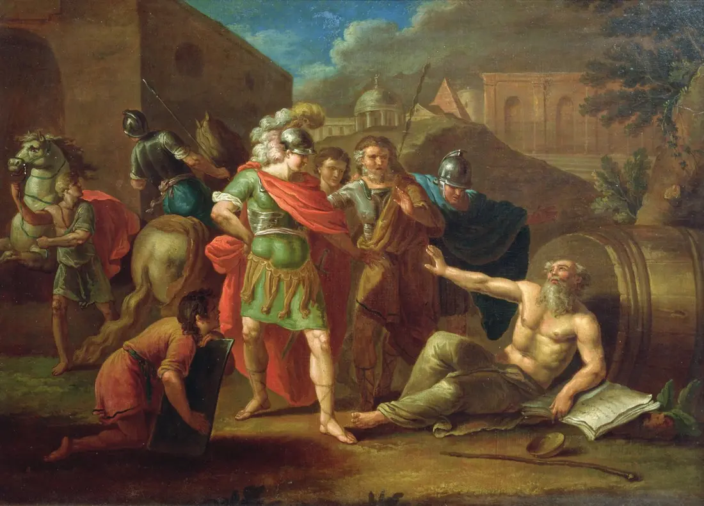

Dans une lettre à son ami Lucilius, Sénèque raconte une habitude qu’il s’impose volontairement, quelques jours par mois : manger la nourriture la plus grossière, porter des vêtements rêches, dormir sur une paillasse dure, et se demander, chaque soir : « Est-ce vraiment cela que je redoutais ? » Il n’est pourtant pas pauvre. C’est l’un des hommes les plus riches de Rome. Il s’entraîne, délibérément, à ce qu’il craint.
Ce que Sénèque pratique a un nom : l’ascèse.
Askesis : l’entraînement, pas la punition
Le mot grec askesis ne désigne, à l’origine, rien de religieux ni de douloureux : c’est le terme qu’on emploie pour l’entraînement d’un athlète. S’exercer, répéter un geste jusqu’à ce qu’il devienne une seconde nature. Les philosophes grecs, d’abord les cyniques puis les stoïciens, reprennent ce mot pour désigner un entraînement du même ordre, mais appliqué au jugement et au désir plutôt qu’au corps.
C’est une nuance importante, qu’on perd souvent aujourd’hui : l’ascèse philosophique n’est pas l’ascétisme au sens où on l’entend parfois, une privation subie comme une punition ou un sacrifice religieux. C’est un exercice choisi, borné dans le temps, qu’on peut arrêter quand on veut. La différence n’est pas cosmétique : c’est justement parce qu’elle est choisie et temporaire que l’ascèse philosophique renforce, là où la privation subie, elle, épuise.
Diogène, l’ascèse poussée à l’extrême
Si Sénèque pratique l’ascèse par courtes périodes, le cynique Diogène de Sinope en fait un mode de vie permanent : il possède à peine plus qu’un manteau et une écuelle, dort dans un tonneau, et mendie sa nourriture, convaincu que chaque besoin dont on se libère est une parcelle de liberté gagnée sur la dépendance aux choses.
« Ôte-toi de mon soleil. »
Diogène de Sinope, répondant à Alexandre le Grand venu lui demander ce qu’il pouvait faire pour lui (anecdote rapportée par Diogène Laërce)
L’homme le plus puissant du monde connu lui propose n’importe quelle faveur ; Diogène ne lui demande que de ne pas lui faire d’ombre. L’anecdote a sans doute été enjolivée au fil des siècles, mais elle illustre exactement ce que l’ascèse cynique visait : posséder si peu qu’aucun pouvoir extérieur n’a plus de prise sur vous.

Pourquoi s’imposer volontairement un manque
Le mécanisme derrière l’ascèse est presque une idée d’exposition : on s’habitue à une situation redoutée en la vivant un peu, à dose choisie, pour en mesurer le poids réel. La plupart du temps, ce poids est plus léger qu’on ne l’imaginait. Ce n’est pas le manque qui inquiète le plus, au fond, c’est la peur du manque : en s’y frottant volontairement, on désamorce une part de cette peur, et on découvre qu’on dépend de bien moins de choses qu’on ne le pensait pour aller bien.
C’est aussi, d’une autre manière, ce que Sénèque développe ailleurs sur le renoncement à ce qui ne dépend pas vraiment de nous : on retrouve cette même logique, appliquée au temps plutôt qu’aux biens matériels, dans l’essai Cogito sur le renoncement.
Ce que ce n’est pas
L’ascèse philosophique n’est pas une compétition avec soi-même, ni une façon détournée de se punir ou de se priver par culpabilité. Ce n’est pas non plus l’esthétique du minimalisme qu’on affiche pour montrer qu’on sait s’en passer : l’exercice n’a de sens que s’il reste discret, sans spectateur, fait pour soi. Et ce n’est surtout pas une affaire de restriction alimentaire ou de performance physique : le point n’est jamais le manque lui-même, c’est ce qu’il révèle sur ce dont on a vraiment besoin.
Un ermitage juché au sommet d’un piton rocheux, visible à des kilomètres à la ronde, résume bien cette dérive : se retirer du monde de façon si spectaculaire que tout le monde est censé le remarquer. Ce n’est plus un exercice, c’est une mise en scène, et une mise en scène a besoin d’un public, exactement ce que l’ascèse, bien pratiquée, cherche à ne pas être.
L’exercice au quotidien
Pas besoin d’imiter Diogène pour en retenir quelque chose d’utile. Choisir, un jour ou une semaine, de se passer d’un confort qu’on utilise sans y penser : la livraison à domicile, les notifications, la voiture pour un trajet qu’on pourrait marcher, les achats impulsifs. L’idée n’est pas de souffrir, c’est de vérifier, concrètement, à quel point on dépend réellement de ce dont on croit dépendre.
En bref
📌 L’ascèse (du grec askesis, « entraînement ») désigne à l’origine l’exercice d’un athlète, un sens repris par les philosophes grecs pour désigner un entraînement du jugement et du désir, pas du corps.
📌 Elle ne doit pas être confondue avec l’ascétisme religieux ou la privation subie : c’est un exercice choisi et borné dans le temps, que l’on peut arrêter quand on veut, ce qui renforce plutôt que n’épuise.
📌 Son principe est de désamorcer la peur du manque en s’y frottant volontairement, à dose choisie, pour découvrir qu’on dépend souvent de bien moins de choses qu’on ne l’imaginait pour aller bien.